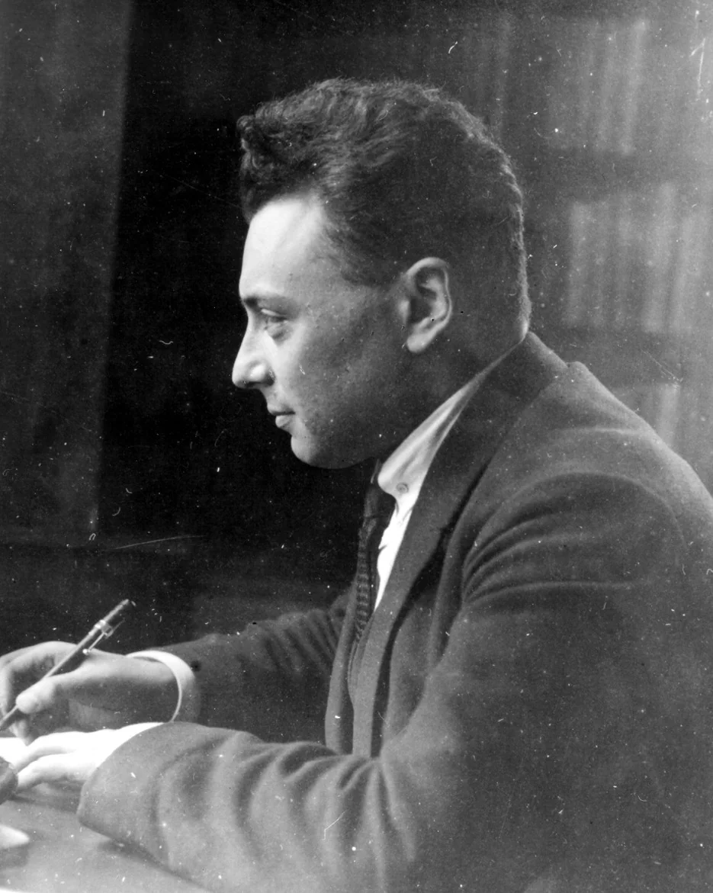
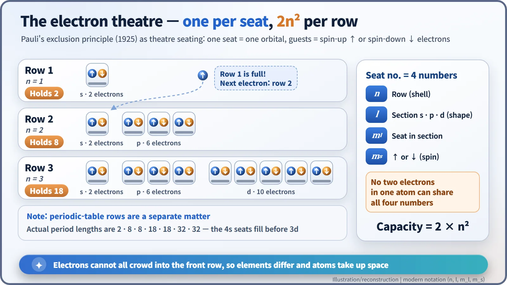
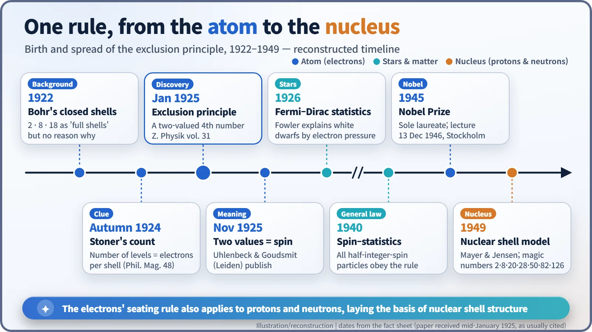
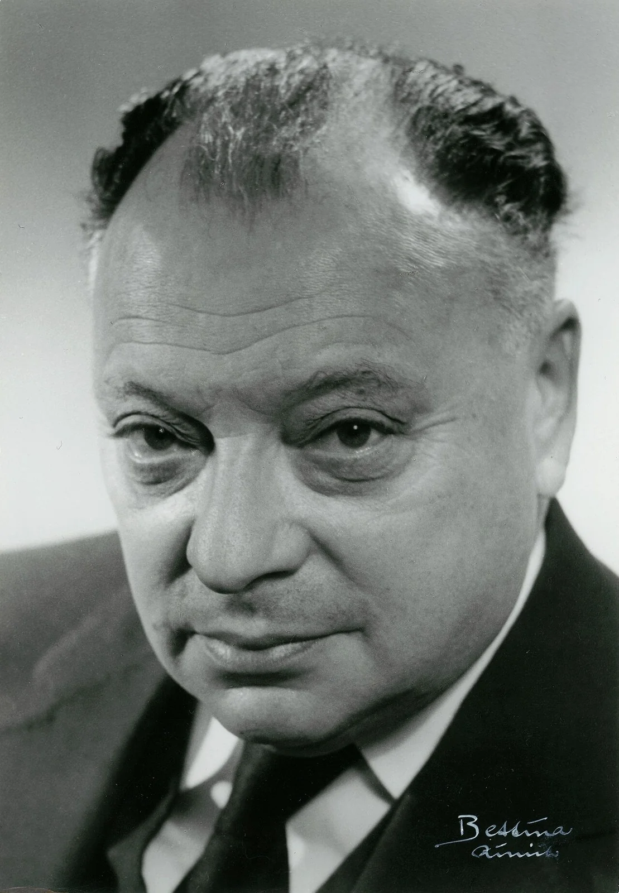

Nuclear History · 036
Every Electron Gets Its Own Seat — Pauli's Exclusion Principle (1925)
A two-valued fourth quantum number and one strict seating rule explained why electrons fill shells of 2, 8 and 18, and later reached stars and atomic nuclei.
In January 1925 the 24-year-old Wolfgang Pauli proposed that no two electrons in an atom can share the same set of four quantum numbers. That one rule explained why electron shells fill up at 2, 8 and 18, why elements behave so differently and why matter takes up space. Later it reached into stars and into the atomic nucleus itself.
A question you can ask from your chair
Atoms are mostly empty space, so why don't you sink straight through the chair you are sitting on? And another puzzle: neon and sodium sit next to each other in the periodic table, one atomic number apart. Neon is an aloof gas that reacts with practically nothing; drop sodium into water and it fizzes, darts about and can burst into flame. Surprisingly, both puzzles have the same answer: a short rule proposed in January 1925 by a 24-year-old physicist in Hamburg. Two of a kind may not share a seat.
Why don't all the electrons pile into the front row?
In the early 1920s Niels Bohr's model of the atom put electrons on fixed orbits, or shells. It explained the spectrum of hydrogen beautifully, but it had a gaping hole. If lower energy means more stability, why don't all of an atom's electrons crowd into the innermost shell? Chemists and physicists knew from experience that shells seemed to be "full" at 2, 8 and 18 electrons, yet nobody could say why those numbers. Years later, in his Nobel lecture, Pauli recalled that "the question, as to why all electrons for an atom in its ground state were not bound in the innermost shell, had already been emphasized by Bohr as a fundamental problem." [2] [6]
There was a second headache, the so-called anomalous Zeeman effect. Put atoms in a magnetic field and their spectral lines split, but not in the way theory predicted. The leading experts blamed the inner "core" of the atom for the oddities. [3]
A fourth number, and one simple rule
Wolfgang Pauli (1900–1958) was born in Vienna and trained in Munich under Arnold Sommerfeld. From 1923 he was teaching at the University of Hamburg, and he turned the experts' idea around: the trouble lay not in the core but in the outer electron itself. [3] [5]
The decisive clue came in the autumn of 1924 from the British physicist Edmund C. Stoner. He noticed that, for a given shell, the number of energy levels that appear when spectral lines split in a magnetic field matches the number of electrons that fill that shell. Pauli drew a bold conclusion. To describe an electron's state you need, besides the three numbers already in use, a fourth one that can take only two values. And no two electrons in an atom can have all four numbers the same. In the wording of his paper (in English translation): "There can never be two or more equivalent electrons in an atom, for which in a strong field the values of all the quantum numbers … are the same." [2] [3]
The paper, "On the Connexion between the Completion of Electron Groups in an Atom with the Complex Structure of Spectra", is usually cited as received by Zeitschrift für Physik in mid-January 1925 and appeared in volume 31 (pages 765–783). Pauli described the new property as "a classically nondescribable two-valuedness" of the electron (an English translation of his German). In other words, he did not know what it was either. At first the principle was a rule distilled from spectral data, not something derived from a deeper theory. [1] [4]

The electron theatre
Think of an atom as a theatre with reserved seating. Every ticket carries a four-part seat number: which row (n, the shell), which section (s, p or d, the shape of the orbital), which seat within that section (its orientation), and finally "up" or "down". Each seat can hold exactly one "up" guest and one "down" guest. That gives row 1 room for 2 electrons, row 2 for 8 and row 3 for 18: in general 2n² per row. Once a row is full, the next arrival has no choice but to sit further back.

Now the opening puzzles make sense. Neon has filled rows 1 and 2 completely, with no gaps, so it keeps to itself. Sodium has one lonely electron in row 3 that it gives away readily, so it reacts violently. Your chair works the same way: for atoms to overlap, their electrons would have to squeeze into seats that are already taken, and the exclusion principle forbids that. Together with electrical repulsion, it is one of the deep reasons matter takes up space at all. [6]
One caveat: the lengths of the rows of the periodic table are 2, 8, 8, 18, 18, 32, 32, not simply 2n². Energy ordering intervenes; for example, the 4s seats fill before the 3d seats.
The two values get a name: spin
The identity of the fourth number soon emerged. In early 1925 Ralph Kronig suggested that the electron spins on its own axis, but Pauli criticised the idea sharply and Kronig did not publish it. Later that year in Leiden, two graduate students, George Uhlenbeck and Samuel Goudsmit, reached the same idea and, encouraged by their professor Paul Ehrenfest, published it in November 1925. This is what we now call spin. Pauli came round in early 1926, after Llewellyn Thomas resolved a troublesome factor of two. [7]
The mural says, in Dutch, that an electron turns either left or right. But spin is not really a tiny spinning top. It is a built-in quantum property of the electron, and a measurement always gives one of just two values. Pauli's phrase "classically nondescribable" turned out to be exactly right.
Beyond the atom: stars and nuclei
The rule did not stop at electrons in atoms. In 1926 Ralph Fowler used it to explain why white dwarf stars are not crushed by their own gravity: their electrons, packed together, resist being squeezed into the same states. In 1940 Pauli proved the spin–statistics theorem, which says that every particle with half-integer spin obeys the exclusion principle. [6]
For nuclear energy, the most important place is the atomic nucleus. Protons and neutrons also have spin 1/2, so inside a nucleus each fills its own seating chart separately. That is one reason why light stable nuclei have roughly equal numbers of protons and neutrons: pile up too many of one kind and they are forced into the expensive back rows. In 1949 Maria Goeppert Mayer and J. Hans D. Jensen pushed this thinking further into the nuclear shell model, which explained the unusually stable "magic numbers" 2, 8, 20, 28, 50, 82 and 126.

Pauli received the 1945 Nobel Prize in Physics alone, "for the discovery of the Exclusion Principle, also called the Pauli Principle", after a nomination by Albert Einstein. He had spent the war at the Institute for Advanced Study in Princeton and could not attend that year's ceremony; he gave his Nobel lecture in Stockholm on 13 December 1946. [2] [5]

A single sentence that began as a way of tidying up spectral data ended up explaining why elements have different characters, why matter is solid, and how the nucleus is built. If your chair is holding you up today, you can thank an invisible usher checking every electron's ticket.